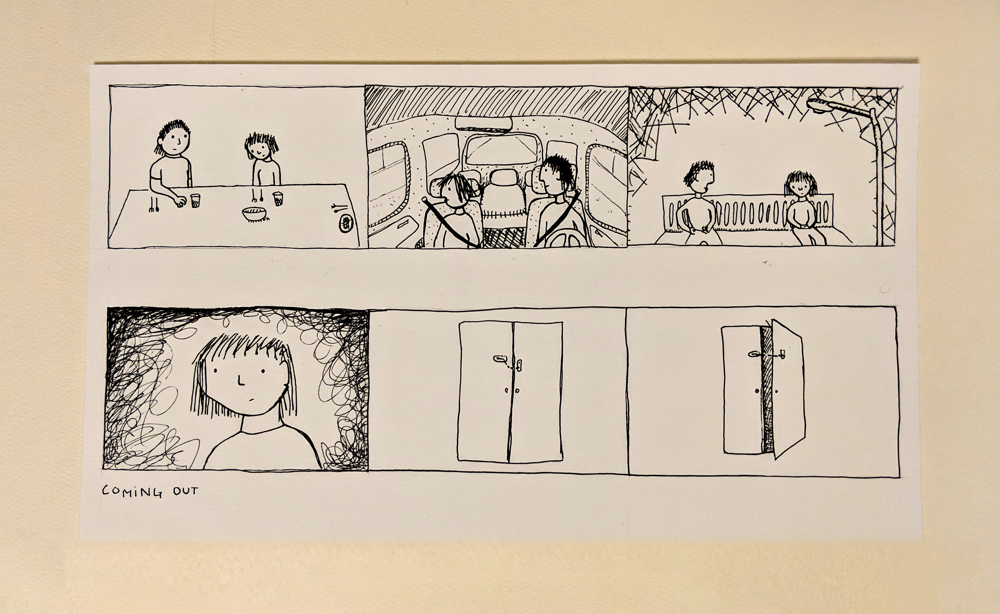
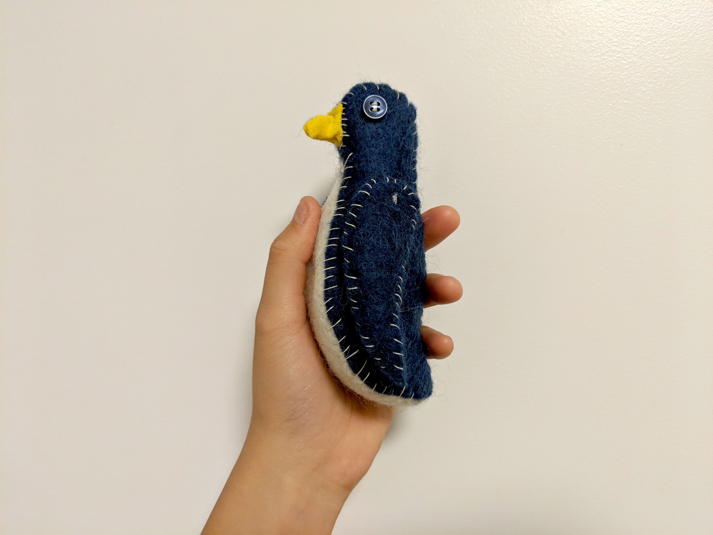
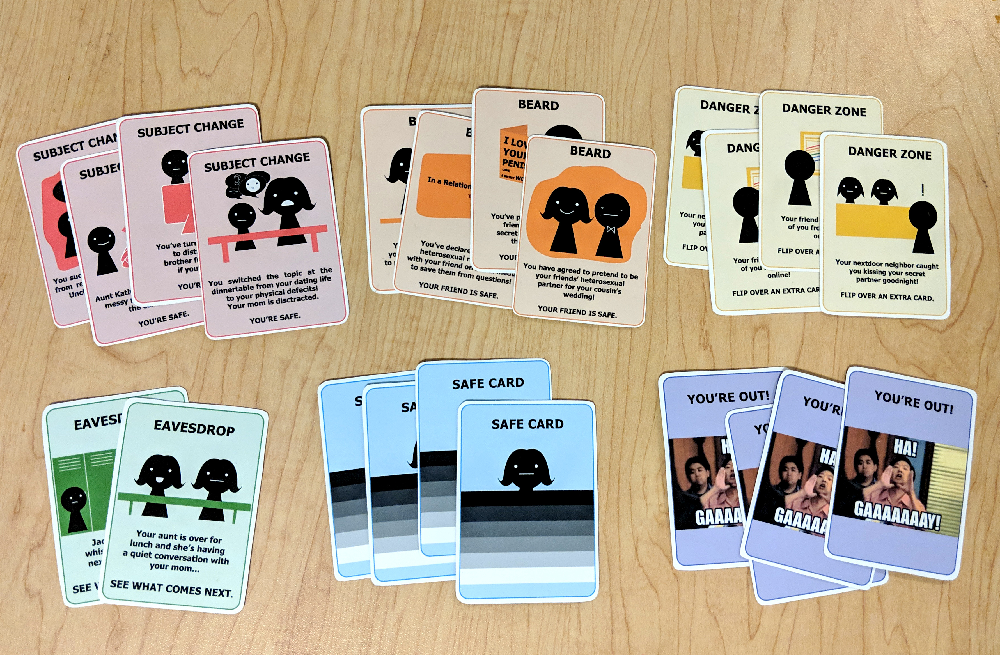

I focused on creating a series of 2D, 3D, and interactive visual iderations on the topic of coming out. From this study, I created a comic, a felt penguin, and a card game.
  
Coming out is a privledge. Since marriage equality in the USA passed in 2015, society has taken strides in accepting all sexual and gender identities. In our time of cultural, political, and societal turmoil, it's easy to forget that respect is the foundation of acceptance. I highlighted coming out as my central theme to explore and emphasize the role of privledge in acceptance and progress.
The works created from this study were not dark nor heavy. The results were opposite. A colorful vibrant card game, a soft friendly animal, and an illustrated comic all successfully spread the reality of coming out. Not only did I gain insight into the struggles of coming out, but I also discovered that heavy topics can be made approachable through design.